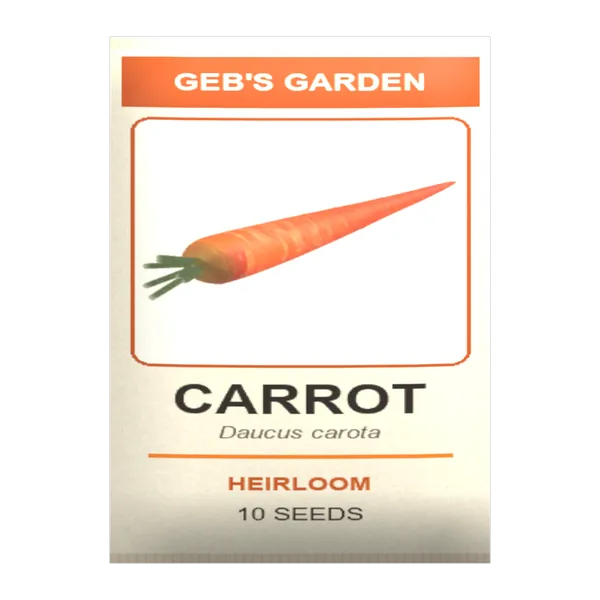
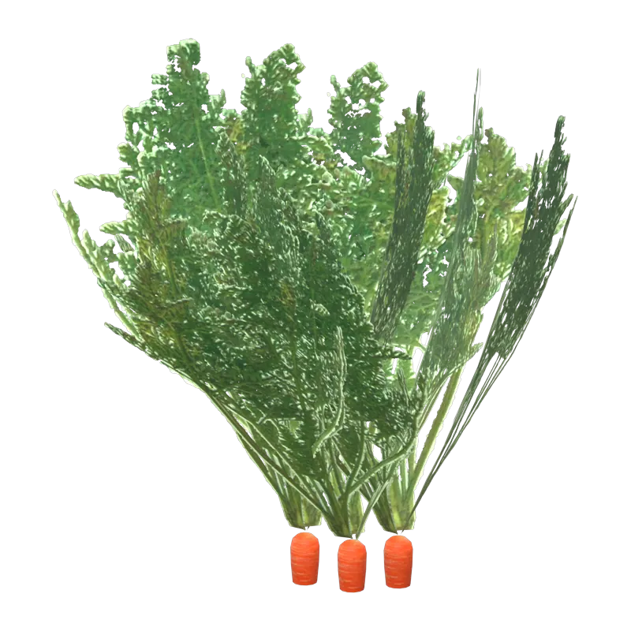

A DayZ mod by Geb
Plants.
Grow your own in DayZ. Raise 27 garden crops from seed packets, dig wild ginseng on the forest floor, and cook, dry or cure what you harvest.
Gardening
Grow your own.
Twenty-seven crops, each from its own seed packet, through five growth stages in a garden plot. Eat the harvest raw, bake it, boil it, or dry it for later.

Open a packet.Each crop comes in a Geb's Garden seed packet, found as loot.
Plant and water.Sow in a tilled garden plot, just like vanilla seeds.- Harvest.Pick it when ripe, before it dries out or spoils.
Wild plants
Forage the woods.
Wild plants grow on the forest floor near players, like vanilla's mushrooms. Dig them whole, eat or brew them, and keep the seeds for your garden.
For server owners
Set up in minutes.
Nothing replaces vanilla. Seed packets are ordinary loot and wild plants join the vanilla forest-floor events, so you add only what you want.
-
1
Install the mod
Subscribe on the Workshop, place
@gebsplantsbeside the server executable, copy its key intokeys/, and load-mod=@gebsplantson the server. Every player needs the mod too. -
2
Stock the seed packets
Seed packets are loot, like vanilla's
TomatoSeedsPack. Copy itstypes.xmlentry once for each packet below and change the name. -
3
Let wild plants grow
Give each wild plant a
types.xmlentry like vanilla'sAgaricusMushroom, then add it to the vanillaTrajectoryevent that scatters forage on the forest floor around players.<type name="geb_Ginseng"> <nominal>0</nominal> <lifetime>900</lifetime> <restock>0</restock> <min>0</min> <quantmin>-1</quantmin> <quantmax>-1</quantmax> <cost>100</cost> <flags count_in_cargo="0" count_in_hoarder="0" count_in_map="1" count_in_player="0" crafted="1" deloot="0"/> <category name="food"/> </type> -
4
Test it
Stop the server before editing and keep backups. Validate the XML, restart, and read the RPT and script logs. Values that suit Chernarus may not suit Sakhal, Livonia or a custom map.
Reference
Every classname.
All 112 public classes, for spawning, trader lists and loot tables. Click a name to copy it.
| Classname | Name | Category |
|---|
Help
Questions.
How do the garden crops grow?
Empty a Geb's Garden seed packet, plant the seeds in a tilled garden plot and water them, as with vanilla seeds. Each crop grows through five stages; harvest it when ripe, before it dries or spoils. Cut fresh seeds out of a raw harvest with any blade: thresh barley and sorghum, shell peas and peanuts, cut sweet potatoes into seed pieces, take ginseng seeds from the berries, and split garlic into cloves. Carrots, cabbage, collards, beets, radishes, turnips, leeks and hops come from packets only. A whole watermelon or cantaloupe is too big to eat: prepare it with a blade for slices and seeds, as with vanilla's pumpkin.
Where do I find ginseng?
On the forest floor in hardwood woods, where the server adds it to the vanilla TrajectoryDeciduous event. You find the whole dug plant: look for three prongs of five toothed leaflets and a cluster of red berries over a forked, ringed tan root. Chew the root for a bitter-sweet lift, boil it into a tea, or dry it to keep and trade. You can also grow it: sow seeds from a Geb's Garden packet, or take them from the red berries with a blade, and dig the plants once they carry ripe berries.
How do I cure tobacco?
Tie two bunches of green leaves into a hand. Hang the hand in a smoking slot of a stone oven, a closed barrel stove or an indoor fireplace, and take it out when it turns golden brown, after about eight minutes of smoke; left in, it scorches. A hand left hanging anywhere else may cure by itself or rot. Start a bale from a cured hand and a rope, then add cured hands until it holds five.
Where did the animals and mushrooms go?
Geb's Plants used to be part of Geb's Flora & Fauna. It is now three mods, so servers can pick what they want: Geb's Animals has the wildlife, and Geb's Mushrooms has the 63 fungi. The classnames haven't changed. If your server used the old mod, load all three to keep everything players already have.
Does every player need the mod?
Yes. It supplies the models, textures, scripts and item names.
Can I put it in a server pack?
No. Use the Workshop item, and a Steam Collection for your server's required mods.